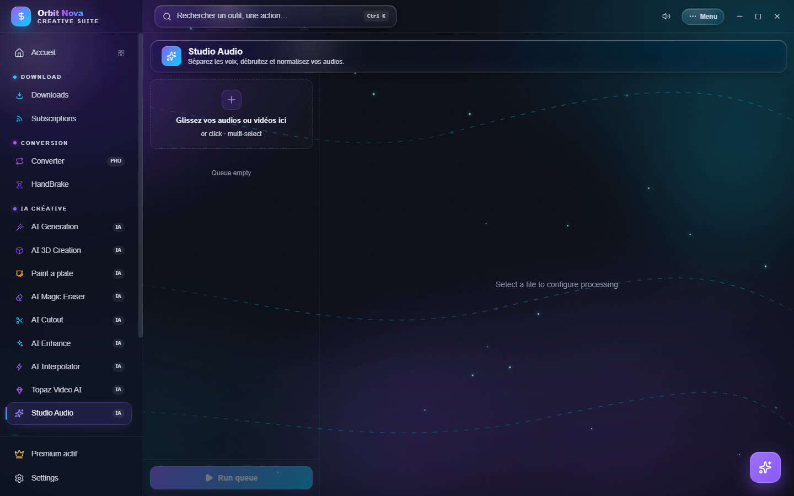
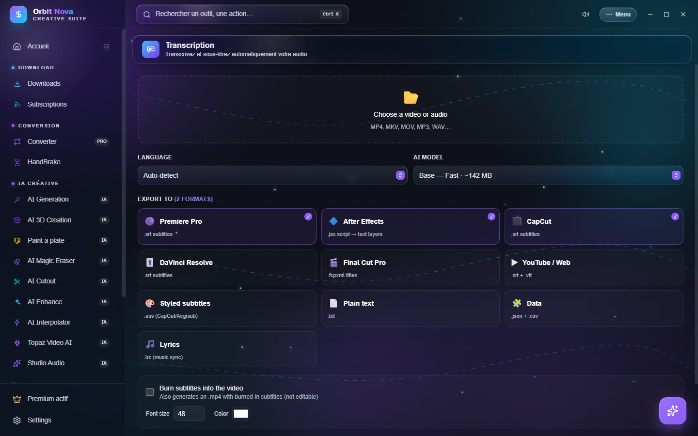

Audio and transcription
Audio Studio
Processes the audio of a sound file or of a video.


- Drop your audio files or videos in the area (several at once).
- Select a file and pick the Processing:
| Processing | What it does |
|---|---|
| Stem separation | splits vocals from music: 2 stems (vocals + accompaniment), 4 stems (vocals, drums, bass, other) or, with Demucs, 6 stems (+ guitar and piano). Premium. |
| Denoise | reduces hiss and constant background noise; set the strength. |
| Normalize | brings the volume to the level of streaming platforms (-14 LUFS, peak -1.5 dBTP). |
| Extract audio | takes the sound track out of a video, without re-encoding the picture, as WAV, MP3 or FLAC. |
- Apply to the whole queue if needed, then Run queue.
For separation, two engines:
- High quality (Demucs v4): much better; with an NVIDIA card, it uses the GPU. Install: Demucs + PyTorch GPU (about 2.5 GB) or CPU (about 700 MB). Stems come out as 320 kb/s MP3. Fast (about 4 times faster) or Max quality (fine-tuned model).
- Fast & light (Spleeter): fair quality, about 700 MB to install.
Transcription
Turns the speech of a video or audio file into text and subtitles, on your computer. Part of Orbit Premium.


- Choose a video or audio (MP4, MKV, MOV, MP3, WAV…).
- Language: Auto-detect or the spoken language.
- AI model: from the fastest (Base, about 142 MB) to the most accurate (heavier and slower).
- Export to: tick the formats you want. Orbit prepares the right file for each program: Premiere Pro, After Effects, CapCut, DaVinci Resolve, Final Cut Pro, YouTube / Web, Styled subtitles, Plain text, Data and Lyrics.
- Burn subtitles into the video also creates an
.mp4with burned-in subtitles (not editable); set the font size and color. - Output folder (next to the source file by default), then transcribe and export.
When it is done, Open shows the files created.